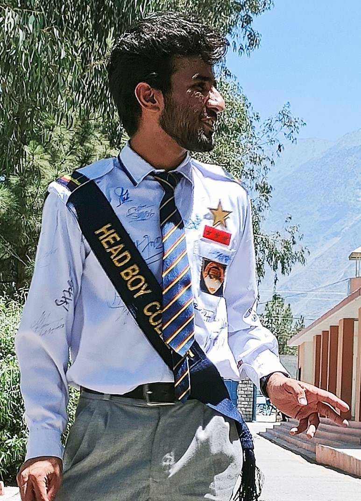

SAFFI MUHAMMAD HASHIR's Resume

SAFFI MUHAMMAD HASHIR
Beginner Mobile App, Website Software Engineer
Email: saffimhashir123@gmail.com
Insta: Saffi Muhammad Hashir
Portfolio
GitHub: My Github
Education
National University Of Computer And Emerging Sciences(FAST),Islamabad
REFERENCE: FAST-NUCES(HOME PAGE)
B.S. Computer Science
Beginner , with no Special or Professional Experiences
A Student, learning BasicPprogramming
Coursera, Mountain View
April 2022 - Present
- There’s a lot of blood, sweat, and guts between dreams and success.
- I am an 18 years old Bachelor, learning advance skills related to Computer Sciences
- Grasping Knowledge and Skills from interactive online IT courses
- Learning student, gaining knowledge from Teachers worldwide
Learner, Software Engineer
6th Road,Satellite town ,Rawalpindi
April 2022 - Present
- Learner of mobile apps, reusable iOS UI modules
- Beginner as computer service contractor
- Students in a computer science major enter the dynamic world of technology,
studying topics like artificial intelligence, software design and computer graphics.
- By the time majors complete their degrees,
they will have the skills to examine complex problems with computer tools.